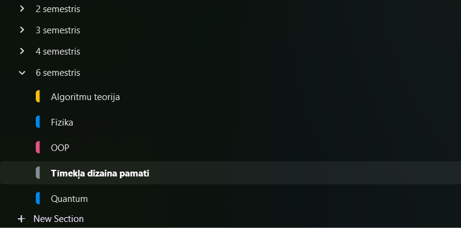

Visu studiju laikā es, lielākoties, izmantoju papīra klades, jo tā biju pieradis kopš skolas. Papīra klades ir labs veids, kā var ātrāk atcerēties jaunu materiālu, ja tas bija rakstīts ar roku kladē.
Papildus ieguvums no papīra kladēm ir — eksāmenos vai kontroldarbos, ja ir atļauts izmantot palīglīdzekļus, tad, visticamāk, tiem ir jābūt ar roku rakstītām, un tā kā visi pieraksti ir kladē, tos var ātri un ērti izmantot eksāmenā. Jo, ja pieraksti būtu elektroniskā veidā, tos būtu jāparaksta uz papīra, kas ir lieks darbs. Toties
papīra kladēm ir arī būtiskie mīnusi : tās sver ļoti daudz, it īpaši , ja tā ir liela A4 izmēra 96 lapušu klade. Tās ir viegli sabojāt mitrumā, kā arī tās grūti glabāt un vēl grūtāk tajās pēc tam kaut ko atrast, atšķirībā no digitālajiem , kuri ir pieejami dažu klikšķu brīdī.

Taču universitāte ir laba ar to, ka lekcijās nav aizliegts lietot elektroniskās ierīces, atšķirībā no skolas, līdz ar to, tas ir labs veids, kā izmēģināt jaunas iespējas digitālai konspektu veidošanai. It īpaši dažos kursos ir grūti konspektēt kladē, jo, piemēram, ir daudz jāpārzīmē no slaidiem, bet elektroniskajā variantā var paņemt to gatavo shēmu vai zīmējumu un piezīmēt klāt kādas piezīmes. Tā arī es darīju, es izvēlējos "OneNote" programmatūru, jo tā ir pieejama gan uz datora, gan uz telefona. Telefonā varēju nobildēt lekcijas slaidu un jau datorā to rediģēt, piezīmēt vai pierakstīt kaut ko klāt. Sanāca diezgan ērti, neskatoties uz to, ka man nav planšetes ar stilusu.
